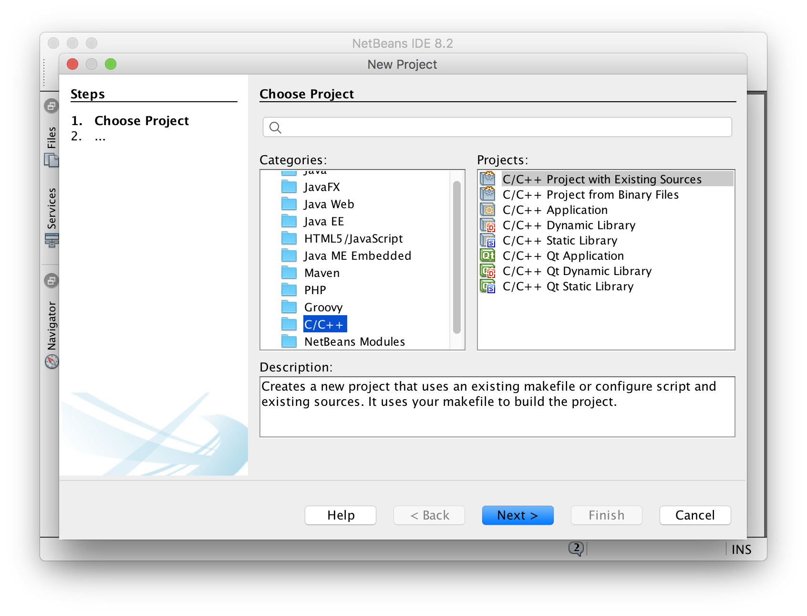
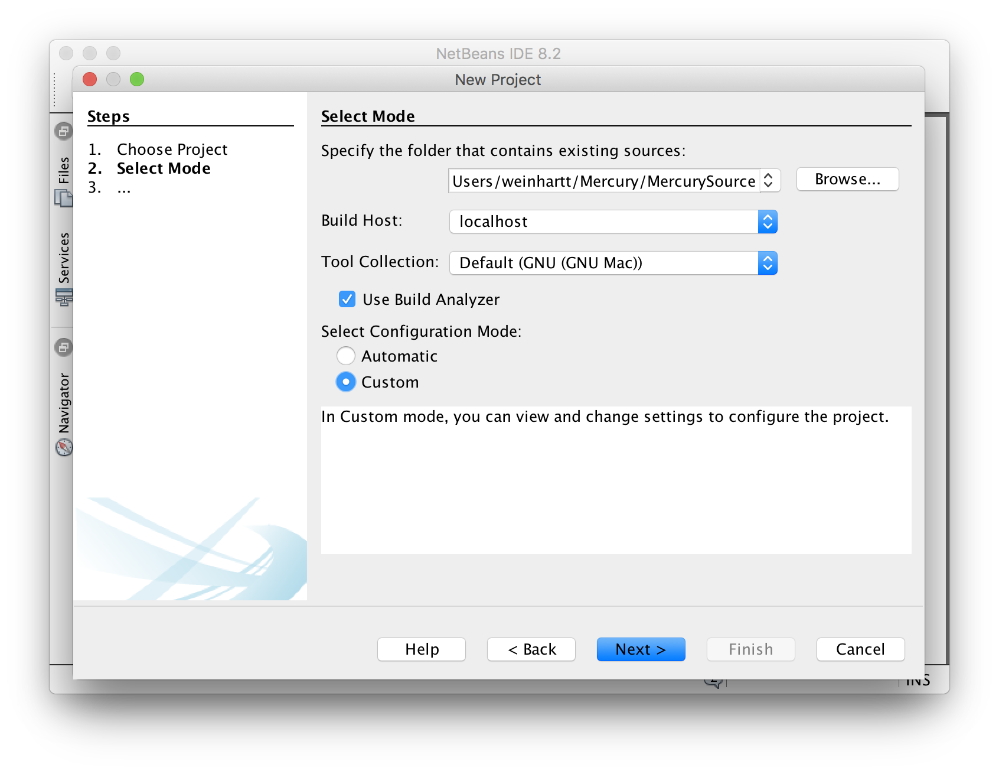
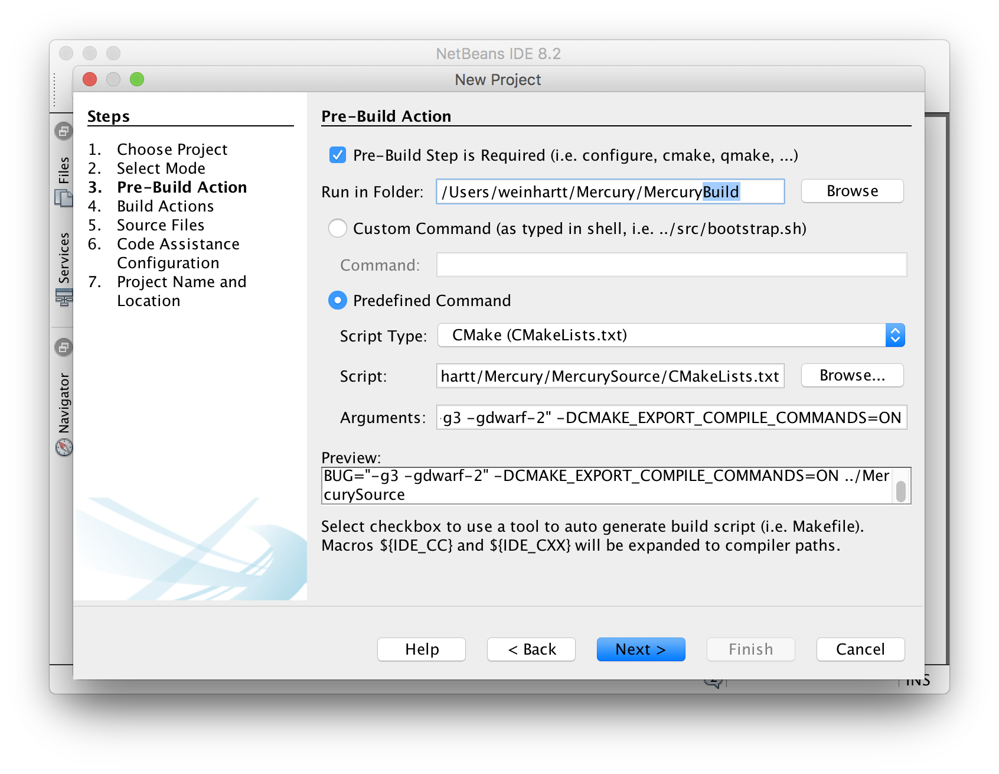
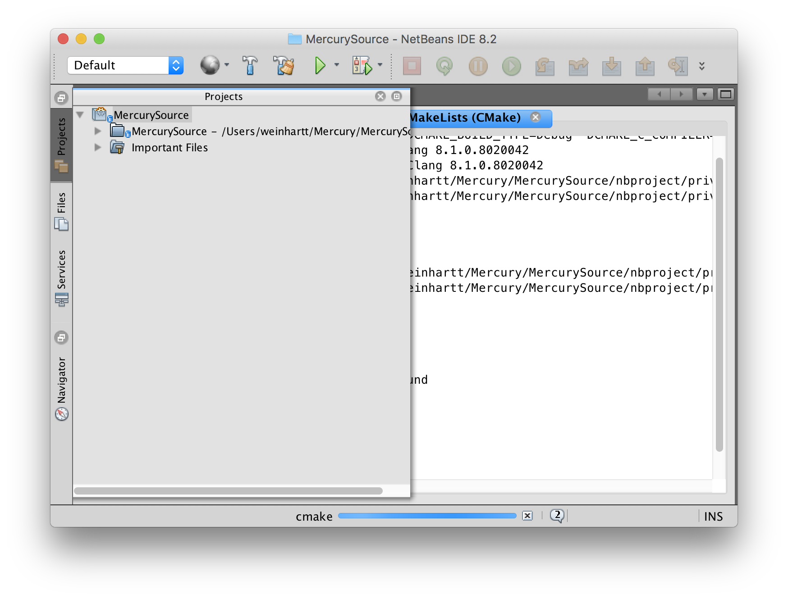

Writing, compiling, and debugging code is easier if you use a integrated development environment (IDE), such as NetBeans.
To use MercuryDPM with Netbeans:
- Install Netbeans for C/C++ from https://netbeans.org/downloads/ and run the application.
- Click on File -> New Project.
- Select C/C++ -> C/C++ Project With Existing Sources and click Next.

- As source, specify the folder which contains the Mercury source files (e.g., ~/Mercury/MercurySource). Because we want a separate Build and Source folder, we need to customise the cmake configuration. Therefore, select Custom configuration mode and click Next.

- In Step 3, change the directory "Run in Folder" from "MercurySource" to "MercuryBuild".

- Click Next for steps 3-7. Finally, click finish. Netbeans will now run cmake to create make files for compiling MercuryDPM, and a code analysis, so the IDE can help you navigate through the code.

- Now you are ready to go. Click the hammer symbol (Build Project) to compile MercuryDPM for the first time. This will take a few minutes.